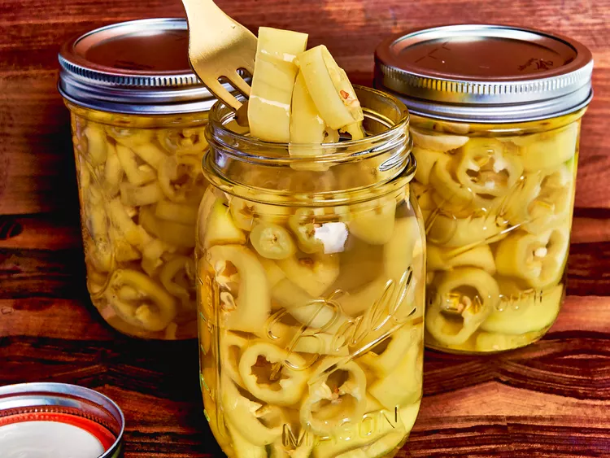

Pickled Banana

Pickled Banana
Very nice food
Ingredients
- 10 to 12 fresh banana peppers, cut into 3/4-inch slices
- 1 to 2 garlic cloves
- 1 to 2 slices fresh jalapenos (optional)
- 1 1/2 cups vinegar
- 1 cup water
- 1 1/2 teaspoons kosher salt
Steps
-
Pack peppers, garlic, and jalapenos tightly in a glass jar.
-
Bring vinegar, water, and salt to a boil, stirring occasionally, until salt is dissolved. Remove from heat and let stand 10 minutes. Pour warm mixture over peppers and seal jar. Refrigerate 12 to 24 hours before using and up to 4 weeks.